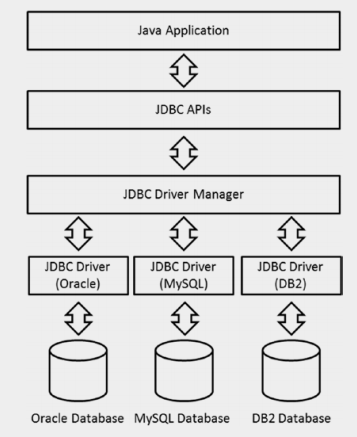
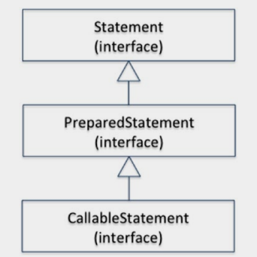
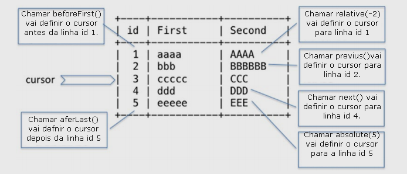

JAVA SE 8
Construindo Aplicações de Banco de Dados com JDBC
O JDBC (Java Database Connectivity) é uma API Java importante que define como um cliente acessa um banco de dados. Como tal, é fundamental na criação de soluções Java corporativas de larga escala.
Em um nível alto, a interação com um banco de dados envolve as seguintes etapas:
- 1. Estabeleça uma conexão com um banco de dados.
- 2. Execute consultas SQL para recuperar, criar ou modificar tabelas no banco de dados.
- 3. Feche a conexão com o banco de dados.
Java fornece um conjunto de APIs (JDBC) para realizar essas atividades com bancos de dados. Você pode usar o JDBC para estabelecer uma conexão com um banco de dados, executar sua consulta SQL e fechar a conexão com o banco de dados. O benefício do JDBC é que você não está escrevendo um programa para um banco de dados específico. O JDBC cria um acoplamento flexível entre seu programa Java e o tipo de banco de dados utilizado. Por exemplo, os bancos de dados podem diferir como eles estabelecem uma conexão (o nome da API pode diferir e assim por diante). O JDBC oculta toda a heterogeneidade desses bancos de dados e oferece um único conjunto de APIs que você pode usar para interagir com todos os tipos de bancos de dados. Observe que o JDBC suporta apenas bancos de dados relacionais, como MySQL, Oracle, Microsoft SQL e DB2. Ele não suporta bancos de dados de nova geração (também conhecidos como bancos de dados NoSQL), como o MongoDB e o Neo4j.
As classes e interfaces JDBC fazem parte dos pacotes java.sql. * E javax.sql. *. Este capítulo pressupõe que você já esteja familiarizado com as consultas SQL e tenha algum conhecimento básico dos conceitos de banco de dados. O capítulo descreve o JDBC 4.2, que faz parte do lançamento do Java SE 8.
Todos os códigos apresentado estão no reposítorio do github e poderão ser acessado através do link no final da página.
Introdução ao JDBC
Vamos examinar os componentes vitais do JDBC e como esses componentes funcionam juntos para alcançar uma integração perfeita com os bancos de dados. Uma arquitetura simplificada do JDBC é representada na Figura abaixo. Um aplicativo Java usa APIs JDBC para interagir com bancos de dados. As APIs do JDBC interagem com o gerenciador de drivers JDBC para se conectar de forma transparente e executar várias atividades de banco de dados com diferentes tipos de bancos de dados. O gerenciador de drivers JDBC usa vários drivers JDBC para conectar-se a seus DBMSs específicos.

Arquitetura JDBC
Os drivers JDBC e o gerenciador de drivers desempenham um papel fundamental na realização do objetivo do JDBC. Os drivers JDBC são projetados especificamente para interagir com seus respectivos DBMSs. O gerenciador de drivers funciona como um diretório de drivers JDBC - ele mantém uma lista de fontes de dados disponíveis e seus drivers. O gerenciador de driver escolhe um driver apropriado para se comunicar com o respectivo DBMS. Ele pode gerenciar vários drivers concorrentes conectados às suas respectivas fontes de dados.
Você pode ver na figura que a complexidade de interações heterogêneas é delegada ao gerenciador de drivers JDBC e aos drivers JDBC. Detalhes de baixo nível e a complexidade associada são ocultados do desenvolvedor do aplicativo pela API do JDBC.
Configurando o banco de dados
Antes de começar a explorar as APIs do JDBC e seu uso, você deve configurar um banco de dados com o qual trabalhar. O banco de dados precisa ser configurado adequadamente antes que você possa começar a escrever programas JDBC. Você pode usar qualquer banco de dados. Os exemplos neste capítulo usam o MySQL para explicar vários aspectos das APIs do JDBC, porque esse banco de dados é gratuito e está amplamente disponível. Esta seção mostra as etapas para configurar um banco de dados MySQL em sua máquina, supondo que você use o Windows (se você estiver usando um sistema operacional diferente, as etapas serão um pouco diferentes).
- 1. Baixe o instalador mais recente do MySQL da página de download do MySQL (www.mysql.com/downloads/mysql).
- 2. Invoque o instalador do MySQL e siga todas as etapas mostradas pelo assistente de instalação. Mantenha os valores padrão e conclua a instalação. O instalador pede que você forneça uma senha root / admin; lembre-se, porque é usado nos exemplos.
- 3. Invoque o cliente de linha de comando do MySQL (no nosso caso, é Cliente de Linha de Comando do MySQL 5.5, mostrado no menu Iniciar). Você verá um prompt do MySQL assim que fornecer a senha root / admin.
O código a seguir configura um banco de dados e cria dois registros:
Enter password: ******** Welcome to the MySQL monitor. Commands end with ; or \g. Your MySQL connection id is 1 Server version: 5.5.27 MySQL Community Server (GPL) Copyright (c) 2000, 2011, Oracle and/or its affiliates. All rights reserved. Oracle is a registered trademark of Oracle Corporation and/or its affiliates. Other names may be trademarks of their respective owners. Digite 'help'; ou '\ h' para obter ajuda. Digite '\ c' para limpar a instrução de entrada atual. mysql> /* Vamos criar um banco de dados para nosso uso.*/ mysql> create database addressBook; Query OK, 1 row affected (0.01 sec) mysql> /* Agora, vamos criar uma tabela nesse banco de dados e inserir dois registros para uso posterior */ mysql> use addressBook; Database changed mysql> create table contact (id int not null auto_increment, firstName varchar(30) Not null, lastName varchar(30), email varchar(30), phoneNo varchar(13), primary key (id)); Query OK, 0 rows affected (0.20 sec) mysql> insert into contact values (default, 'Alan', 'Santos', 'alans@abc.com', '+919876543210'); Query OK, 1 row affected (0.10 sec) mysql> insert into contact values (default, 'William', 'Becker', 'william@abc.com', '+449876543210'); Query OK, 1 row affected (0.03 sec) mysql> select * from contact; +----+-----------+----------+-----------------+---------------+ | id | firstName | lastName | email | phoneNo | +----+-----------+----------+-----------------+---------------+ | 1 | Alan| Santos| alans@abc.com | +919876543210 | | 2 | William | Becker | william@abc.com | +449876543210 | +----+-----------+----------+-----------------+---------------+ 2 rows in set (0.00 sec) mysql> /* Este é o nosso Banco de Dados e ele está pronto para uso agora.*/
Conectando-se a um banco de dados
A interface Connection do pacote java.sql representa uma conexão do aplicativo para o banco de dados.É um canal através do qual seu aplicativo e o banco de dados se comunicam. Na tabela as listas de métodos importantes na interface de conexão. Todos esses métodos geram SQLExceptions, portanto, isso não é mencionado.
| Método | Descrição |
| Statement createStatement() | Cria um objeto Statement que pode ser usado para enviar instruções SQL para o banco de dados. |
| PreparedStatement prepareStatement(String sql) | Cria um objeto PreparedStatement que pode conter declarações SQL. A declaração SQL pode ter parâmetros IN; eles podem conter Símbolo(s), que são usados como espaços reservados para transmitir valores reais posteriormente. |
| CallableStatement prepareCall(String sql) | Cria um objeto CallableStatement para chamar procedures stored no banco de dados. A instrução SQL pode ter parâmetros IN OR OUT; Elas podem conter o(s) símbolo(s), que são as mesmas para a subscrição dos reais. |
| DatabaseMetaData getMetaData() | Obtém o objeto DataBaseMetaData. Esses metadados contêm informações sobre o esquema do banco de dados, informações sobre tabelas e assim por diante, o que é especialmente útil quando você não conhece o banco de dados subjacente. |
| Clob createClob() | Retorna um objeto Clob (Clob é o nome da interface). Character Large Object (CLOB) é um tipo embutido no SQL; ele pode ser usado para armazenar um valor de coluna em uma linha de uma tabela de banco de dados. |
| Blob createBlob() | Retorna um objeto de Blob (Blob é o nome da interface). Binary Large Object (BLOB) é um tipo embutido em SQL; ele pode ser usado para armazenar um valor de coluna em uma linha de uma tabela de banco de dados |
| void setSchema(String schema) | Quando passado o nome do esquema, define esse objeto Connection para o esquema do banco de dados a ser acessado. |
| String getSchema() | Retorna o nome do esquema do banco de dados associado a este objeto Connection; retorna null se nenhum esquema estiver associado a ele |
Conectando-se ao banco de dados usando DriverManager
A primeira etapa para se comunicar com seu banco de dados é configurar uma conexão entre seu aplicativo e o servidor de banco de dados. Estabelecer uma conexão exige entender o URL do banco de dados, então vamos discutir isso agora.
Aqui está o formato geral do URL do JDBC:
Um exemplo de uma string de URL é jdbc:mysql://localhost:3306/:
- 1- jdbc(<protocol>) é o mesmo para todos os DBMSs.
- 2- <subprotocolo> é diferente para cada SGBD - é o mysqlin neste caso. Às vezes, inclui o nome do fornecedor (ausente neste exemplo).
- 3- O formato de <subnome> depende do banco de dados, mas seu formato geral é //<servidor>:<porta>/banco de dados.
- 4- <servidor> depende do local em que você hospeda o banco de dados. Cada DBMS usa um número <port> específico (3306 no caso do MySQL). Finalmente, o nome do banco de dados é fornecido
Aqui estão mais alguns exemplos
jdbc:postgresql://localhost/test jdbc:oracle://127.0.0.1:44000/test jdbc:microsoft:sqlserver://himalaya:1433
Agora, vamos escrever um aplicativo simples para adquirir uma conexão:
//DbConnect.java
import java.sql.Connection;
import java.sql.DriverManager;
// A classe tenta adquirir uma conexão com o banco de dados
class DbConnect {
public static void main(String[] args) {
// URL aponta para o protocolo JDBC: mysql subprotocol;
// localhost é o endereço do servidor em que instalamos nosso
// DBMS (ou seja, na máquina local) e 3306 é a porta na qual
// precisamos entrar em contato com nosso DBMS
String url = "jdbc:mysql://localhost:3306/";
// estamos nos conectando ao banco de dados do addressBook que criamos anteriormente
String database = "addressBook";
// fazemos login como usuário "root" com a senha "mysql123"
String userName = "root";
String password = "mysql123";
try (Connection connection = DriverManager.getConnection
(url + database, userName, password)){
System.out.println("Database connection: Successful");
} catch (Exception e) {
System.out.println("Database connection: Failed");
e.printStackTrace();
}
}
}
Vamos analisar o programa passo a passo:
- 1. A URL jdbc: mysql://localhost:3306/ indica que jdbc é o protocolo e mysql é um subprotocolo; localhost é o endereço do servidor em que instalamos nosso DBMS (a máquina local) e 3306 é a porta na qual entrar em contato com o DBMS. (Observe que esse número de porta é diferente quando você usa algum outro banco de dados. Usamos o número de porta padrão fornecido pelo banco de dados MySQL, que pode ser alterado se necessário. Além disso, se você estiver usando outro banco de dados, o subprotocolo também será alterado.) precisa usar o banco de dados do catálogo de endereços com credenciais root.
- 2. Você pode obter um objeto de conexão invocando o método DriverManager.getConnection(). O método espera a URL do banco de dados junto com um nome de banco de dados, nome de usuário e senha.
- 3.Você precisa fechar a conexão antes de sair do programa. Este exemplo usa uma instrução try-with-resources; portanto, o método close() para a conexão é chamado automaticamente.
- 4. Se algo der errado, você recebe uma exceção. Nesse caso, o programa imprime a exceção stack trace(rastreamento de pilha).
Vá em frente e execute o programa. Aqui está a saída:
Database connection: Failed java.sql.SQLException: No suitable driver found for jdbc:mysql://localhost:3306/addressBook at java.sql.DriverManager.getConnection(DriverManager.java:604) at java.sql.DriverManager.getConnection(DriverManager.java:221) at DbConnect.main(DbConnect.java:16)
Por que você pegou essa SQLException? Quando você tenta se conectar ao banco de dados usando o JDBC, o DriverManager procura pelo driver do MySQL. Você precisa instalar explicitamente os drivers relevantes - eles não fazem parte do JDK.
Você pode baixar o conector para MySQL da sua página de download (http://dev.mysql.com/downloads/connector/j). Não esqueça de adicionar o caminho do conector ao CLASSPATH. Se o conector nome é mysql-connector-java-5.1.21-bin.jar, armazenado em C:\mysql-connector-java-5.1.21, em seguida, adicione c:\mysql-connector-java-5.1.21\mysql-connector- java-5.1.21-bin.jarto o CLASSPATH
É um erro comum esquecer de adicionar o caminho do jar na variável de ambiente CLASSPATH. Nesse caso, a API do JDBC não poderá localizar o driver JDBC e lançará uma exceção. Lembre-se, digitar o caminho do jar não é suficiente: você precisa adicionar o nome do jar junto com o caminho completo para a variável CLASSPATH ou passar o caminho do arquivo jar com o comando –cp ao invocar a JVM.
Atualize a variável CLASSPATH e tente novamente. Você pode obter outra exceção:
Database connection: Failed java.sql.SQLException: Access denied for user 'root'@'localhost' (using password: YES) at com.mysql.jdbc.SQLError.createSQLException(SQLError.java:1074) [... rest of the stack trace elided ...]
Este programa fornece o nome de usuário “root” e a senha “mysql123”. Se você tiver definido a senha do usuário root para outra coisa, receberá essa exceção com a mensagem "acesso negado para o usuário". Há duas maneiras de corrigir esse problema. A primeira maneira é mudar o programa para dar sua senha ao invés do “mysql123” usado neste programa. A segunda maneira é redefinir a senha no banco de dados. Para o MySQL, você pode redefinir a senha da seguinte maneira para o usuário “root”:
UPDATE mysql.user SET Password=PASSWORD('mysql123') WHERE User='root';
FLUSH PRIVILEGES;
Aqui está a saída quando o programa é executado com sucesso:
Database connection: Successful
Quando você vê essa saída, isso significa que você é capaz de estabelecer uma conexão com o banco de dados. Se você quiser experimentar os programas no restante deste capítulo, você deve fazer com que este programa funcione em seu sistema; você precisa estabelecer uma conexão para consultar ou atualizar o banco de dados.
Entendendo a classe DriverManager
A classe DriverManager ajuda a estabelecer a conexão entre o programa (o usuário) e os drivers JDBC. Essa classe também monitora diferentes fontes de dados e drivers JDBC. Portanto, não há necessidade de carregar explicitamente o driver JDBC: O DriverManager procura um driver adequado e, se encontrado, o carrega automaticamente quando você chama o método getConnection(). O exemplo seguinte contém o código para obter a conexão (fornecida em uma instrução try-with-resources) quando você não carrega explicitamente o driver JDBC:
Connection connection = DriverManager.getConnection(url + database, userName, password);
O gerenciador de drivers também gerencia vários drivers simultâneos conectados às suas respectivas fontes de dados. Logo abaixo a lista de outros métodos importantes fornecidos na classe DriverManager, incluindo as versões sobrecarregadas de getConnection():
| Métodos | Descrição |
|---|---|
| static Connection getConnection(String url) static Connection getConnection(String url, Properties info) static Connection getConnection(String url, String user, String password)() | Tenta estabelecer uma conexão com o URL do banco de dados. Além disso, você pode fornecer informações, como nome de usuário e senha, diretamente como argumentos String ou por meio de um arquivo de propriedades. Este método lança uma SQLException se a conexão não puder ser estabelecida. |
| static Driver getDriver(String url) | Pesquisa a lista de drivers JDBC registrados e, se encontrado, retorna o objeto Driver apropriado correspondente à URL do banco de dados. |
| static void registerDriver(Driver driver) | Adicione à lista de objetos Driver registrados no DriverManager. |
| static void deregisterDriver(Driver driver) | Cancela o registro de um driver da lista de objetos de driver registrados no DriverManager. |
Usando o método getDriver(), você pode carregar o driver passando o URL do banco de dados:
String url = "jdbc:mysql://localhost:3306/"; Driver driver = DriverManager.getDriver(url); System.out.println(driver.getClass().getName());
Esse segmento de código imprime com.mysql.jdbc.Driver- esse é o nome completo do driver JDBC do MySQL e o DriverManager conseguiu carregá-lo. A partir desse objeto Driver, você pode estabelecer uma conexão chamando o método connect() e passando a URL do banco de dados e a referência opcional do arquivo de propriedades:
Connection connection = driver.connect(url, /*properties = */ null);
No arquivo de propriedades, você pode fornecer o nome de usuário e senha, além de quaisquer outros detalhes.
Consultando e atualizando o banco de dados
Depois de estabelecer uma conexão com o banco de dados desejado, você pode executar várias operações nele. Operações comuns são conhecidas pelo acrônimo CRUD(create, read, update, delete). Você pode ler dados usando uma declaração SELECT SQL e modificar o banco de dados usando INSERT, UPDATE e DELETE. O JDBC fornece duas interfaces importantes para suportar consultas: Statement e ResultSet. As próximas duas subseções discutem essas interfaces.
Interface Statement
Como o nome sugere, o Statement é uma declaração SQL que pode ser usada para comunicar uma declaração SQL ao banco de dados conectado e receber resultados do banco de dados. Você pode formar consultas SQL usando Statement e executá-lo usando APIs fornecidas na interface Statement (ou em uma de suas interfaces derivadas). A declaração vem em três tipos: Statement, PreparedStatement e CallableStatement; estes são mostrados na hierarquia de herança em:

A declaração da interface e suas subinterfaces
Como você escolhe essas três interfaces de instrução para uma determinada situação? Vamos ver as diferenças:
- Statement: envia uma declaração SQL para o banco de dados sem nenhum parâmetro. Para usos típicos, você precisa usar essa interface. Você pode criar uma instância do Statement usando o método createStatement() na interface Connection.
- PreparedStatement: representa uma declaração SQL pré-compilada que pode ser personalizada usando parâmetros IN. Geralmente, é mais eficiente que um objeto Statement; Portanto, ele é usado para melhorar o desempenho, especialmente se uma declaração SQL for executada várias vezes. Você pode obter uma instância de PreparedStatement chamando o método preparedStatement() na interface Connection.
- CallableStatement: executa procedimentos armazenados. As instâncias de CallableStatement podem manipular IN, bem como os parâmetros OUT e INOUT. Você precisa chamar o método prepareCall() na interface Connection para obter uma instância dessa classe.
Depois de criar um objeto Statement apropriado, você estará pronto para executar uma declaração SQL. A interface Statement fornece três métodos de execução: executeQuery(), executeUpdate() e execute().Se sua declaração SQL for uma consulta SELECT, use o método executeQuery(), que retorna um ResultSet (discutiremos na próxima seção). Quando você deseja atualizar um banco de dados usando uma declaração INSERT, UPDATE ou DELETE, deve utilizar o método executeUpdate(), que retorna um inteiro refletindo o número atualizado de linhas. Se você não souber o tipo de declaração SQL, poderá usar o método execute(), que pode retornar vários conjuntos de resultados ou várias contagens de atualizações ou uma combinação de ambos.
Na tabela a seguir métodos importantes da interface Statement
| Métodos | Descrição |
|---|---|
| boolean execute(String sql) | Executa a consulta SQL fornecida. Este método retorna true se a consulta resultou em um ResultSet. Você pode recuperar o objeto ResultSet chamando o método getResultSet(). Esse método retorna false se a consulta SQL não tiver resultados ou se houver uma contagem de atualizações. Você pode usar o método getUpdateCount() para obter a contagem de atualizações. Em raras situações, esse método pode retornar vários ResultSets; Nesse caso, você pode chamar o método getMoreResults(). |
| ResultSet executeQuery(String sql) | Executa a consulta e retorna o objeto ResultSet como o resultado. Se não houver resultados, o método não retornará nulo; em vez disso, o objeto ResultSet retornado retornará false quando o método next () for chamado. |
| int executeUpdate(String sql) | Executa consultas CREATE, INSERT, UPDATE ou DELETESQL. Ele retorna o número de linhas atualizadas (ou zero se não houver resultado, como com a declaração CREATE) |
| Connection getConnection() | Retorna o objeto Connection com o qual o objeto Statement foi criado |
| void close() | Fecha o banco de dados e outros recursos JDBC associados a esse objeto Statement. Chamar close() em um objeto Statement já fechado não tem efeito. |
Escolha o método executável relevante com base no tipo da declaração SQl. lembre-se de que cada método de execução retorna uma saída diferente. o método executeQuery() retorna um ResultSet, executeUpdate() retorna uma contagem de atualização e o método execute() pode retornar múltiplos ResultSets ou múltiplas contagens de atualizações ou uma combinação de ambos.
Interface ResultSet
Bancos de dados relacionais contêm tabelas. Cada tabela possui um conjunto de atributos (propriedades de um objeto modelado pela tabela) que são representados por colunas; linhas são registros contendo valores para essas propriedades. Quando você consulta um banco de dados, ele resulta em dados tabulares: um certo número de linhas contendo as colunas solicitadas pela consulta. Esses dados tabulares são chamados de ResultSet. Um ResultSet é uma tabela com cabeçalhos de coluna e valores associados solicitados pela consulta.
Um ResultSet mantém um cursor apontando para a linha atual. Você pode ler apenas uma linha por vez, então você deve alterar a posição do cursor para ler/navegar por todo o ResultSet. Inicialmente, o cursor é definido para logo antes da primeira linha. Você precisa chamar o método next() no ResultSet para avançar a posição do cursor em uma linha. Este método retorna um valor booleano; Portanto, você pode usá-lo em um whileloop para iterar sobre o ResulSet inteiro.
Métodos úteis de ResultSet para mover o cursor:
| Métodos | Descrição |
|---|---|
| void beforeFirst() | Define o cursor antes da primeira linha no ResultSet. |
| void afterLast() | Define o cursor logo após a última linha do ResultSet. |
| boolean absolute(int rowNumber) | Define o cursor para o número da linha solicitado (posição absoluta na tabela - não em relação à posição atual) |
| boolean relative(int rowNumber) | Define o cursor para o número da linha solicitado em relação à posição atual. rowNumber pode ser um valor positivo ou negativo: um valor positivo avança e um valor negativo retrocede em relação à posição atual. |
| boolean next() | Define o cursor para a próxima linha do ResultSet. |
| boolean previous() | Define o cursor para a linha anterior do ResultSet. |

A imagem acima mostra movendo o cursor chamando os métodos ResultSet
ResultSet também fornece um conjunto de métodos para ler o valor na coluna desejada na linha atual. Em geral, esses métodos vêm em dois tipos: o primeiro sabor usa um número de coluna como entrada e o segundo sabor aceita um nome de coluna como entrada. Por exemplo, os métodos para ler um valor double são double getDouble(int columnNumber) e double getDouble(String columnName). De maneira semelhante, o ResultSet fornece métodos get() para todos os tipos básicos.
Da mesma forma, ResultSet fornece um conjunto de métodos para atualizar valores na coluna desejada na linha selecionada. Esses métodos também vêm em duas variantes: void updateXXX(int columnNumber, XXX x) e void updateXXX(String columnName, XXX x), onde os métodos de atualização são definidos para vários tipos de dados representados como XXX.
Consultando o Banco de Dados
Agora você conhece todas as interfaces necessárias que são usadas para executar uma consulta SQL simples em um banco de dados: Connection, Statement, e ResultSet. A seguir é mostrado as etapas de alto nível para estabelecer conexão com o banco de dados, executar consultas SQL e processar os resultados.
| Connect | Query | Processa Resultados |
|---|---|---|
| DriverMAnager.getConnection() carrega os drivers e estabelece uma conexão. | Usa o objeto Connection, cria o relevane objeto de Statement. From Statement, executa Consultas SQL | Pega o objeto ResultSet. Processa suas linhas. |
Vamos consultar um banco de dados e imprimir a saída. Lembre-se de que você criou um banco de dados denominado addressBook e uma tabela denominada contact nesse banco de dados e inseriu duas linhas na tabela. Suponha que você queira imprimir o conteúdo da tabela;
//DbConnector.java
import java.sql.Connection;
import java.sql.DriverManager;
import java.sql.SQLException;
// Utility class with method connectToDb() that will be used by other programs in this chapter
public class DbConnector {
public static Connection connectToDb() throws SQLException {
String url = "jdbc:mysql://localhost:3306/";
String database = "addressBook";
String userName = "root";
String password = "mysql123";
return DriverManager.getConnection(url + database, userName, password);
}
}
//DbQuery.java
import java.sql.Connection;
import java.sql.Statement;
import java.sql.ResultSet;
import java.sql.SQLException;
// Program to illustrate how to query a database
class DbQuery {
public static void main(String[] args) {
// Get connection, execute query, get the result set
// and print the entries from the result rest
try (Connection connection = DbConnector.connectToDb();
Statement statement = connection.createStatement();
ResultSet resultSet = statement.executeQuery("SELECT * FROM contact")){
System.out.println("ID \tfName \tlName \temail \t\tphoneNo");
while (resultSet.next()) {
System.out.println(resultSet.getInt("id") + "\t"
+ resultSet.getString("firstName") + "\t"
+ resultSet.getString("lastName") + "\t"
+ resultSet.getString("email") + "\t"
+ resultSet.getString("phoneNo"));
}
}
catch (SQLException sqle) {
sqle.printStackTrace();
System.exit(-1);
}
}
}
A saída do programa será a seguinte:
ID fName lName email phoneNo 1 Alan Santos alans@abc.com +919876543210 2 William Becker william@abc.com +449876543210
Vamos ver o que está acontecendo neste código, passo a passo:
- 1- No método main(), há uma declaração try-with-resources. A primeira declaração é uma chamada para o método connectToDb(), que é definido no programa. O método connectToDb() simplesmente se conecta ao banco de dados (que você viu no último exemplo) e retorna um objeto Connection se tiver êxito.
- 2- A próxima instrução cria um objeto Statement da conexão.
- 3- O objeto Statement agora é usado para executar uma consulta. Você deseja buscar todas as colunas na tabela de contatos; Portanto, você escreve SELECT * FROM contact como uma consulta SQL. Você executa a consulta usando o método executeQuery() do objeto Statement. O resultado da consulta é armazenado em um objeto ResultSet.
- 4- O objeto ResultSet é usado para imprimir os dados buscados. Você lê todos os valores da coluna na linha atual e faz o mesmo para cada linha no objeto ResultSet.
- 5- Como você criou os objetos Connection, Statement e ResultSet em uma declaração try-with-resources, não é necessário chamar explicitamente close() nesses recursos. No entanto, se você não estiver usando try-with-resources, precisará liberá-los explicitamente em um bloco finally.
Aqui, você está usando nomes de coluna para ler os valores associados. Você pode usar números de coluna para fazer o mesmo trabalho. Aqui está o código modificado no whileloop para usar números de colunas:
while (resultSet.next()) {
System.out.println(resultSet.getInt(1)
+ "\t" + resultSet.getString(2)
+ "\t" + resultSet.getString(3)
+ "\t" + resultSet.getString(4)
+ "\t" + resultSet.getString(5));
}
Este código produz exatamente o mesmo resultado que o último exemplo. No entanto, é importante observar que aqui o índice da coluna começa em 1, não em 0.
Ao se referir a colunas por índice de coluna, se você se referir a uma coluna por um índice que seja maior que o número total de colunas, obterá uma exceção. Por exemplo, se você alterar um dos índices da coluna usados no exemplo anterior para 6, receberá a seguinte exceção:
java.sql.SQLException: Column Index out of range, 6 > 5. at com.mysql.jdbc.SQLError.createSQLException(SQLError.java:1074) [... this part of the stack trace elided ...] at DbQuery.main(DbQuery.java:18)
Tenha cuidado para sempre fornecer os índices de coluna corretos.
Neste exemplo, você sabe o número de colunas, bem como os tipos de dados nas colunas. E se você não souber o número de colunas em cada linha nem os tipos de dados nas colunas? Nesse caso, primeiro você precisa chamar o método getMetaData() no objeto ResultSet que retorna um objeto ResultMetaData; nesse objeto ResultMetaData, você pode usar o método getColumnCount() para obter a contagem de colunas. Quando você não sabe o tipo de dados de uma entrada de coluna, pode usar o método getObject() no objeto ResultSet. Você pode passar o índice da coluna para getObject() para obter o valor na coluna correspondente. Aqui está o código modificado que usa esses métodos:
// dos metadados resultSet, descubra quantas colunas existem
// e depois leia a entrada da coluna
int numOfColumns = resultSet.getMetaData().getColumnCount();
while (resultSet.next()) {
// lembre-se de que o índice da coluna começa de 1 não 0
for(int i = 1; i <= numOfColumns; i++) {
// como não sabemos o tipo de dados da coluna, usamos getObject()
System.out.print(resultSet.getObject(i) + "\t");
}
System.out.println("");
}
A saída do programa será a seguinte:
ID fName lName email phoneNo 1 Alan Santos alans@abc.com +919876543210 2 William Becker william@abc.com +449876543210
Vamos fazer outro exercício. Desta vez, você só quer imprimir o nome e endereço de e-mail dos registros onde o primeiro nome corresponde a "Alan!".
//DbQuery4.java
import java.sql.Connection;
import java.sql.Statement;
import java.sql.ResultSet;
import java.sql.SQLException;
class DbQuery4 {
public static void main(String[] args) throws SQLException {
try (Connection connection = DbConnector.connectToDb();
Statement statement = connection.createStatement();
ResultSet resultset = statement.executeQuery("SELECT firstName, email FROM
contact WHERE firstName=\"Alan\"")) {
System.out.println("fName \temail");
while (resultset.next()){
System.out.println(resultset.getString("firstName") + "\t"
+ resultset.getString("email"));
}
} catch (SQLException e) {
e.printStackTrace();
System.exit(-1);
}
}
}
A saída do programa será a seguinte:
ID fName lName email 1 Alan Santos alans@abc.com
Atualizando o Banco de Dados
Agora vamos atualizar o banco de dados. Você pode fazer isso de duas maneiras: você pode usar consultas SQL para atualizar o banco de dados diretamente ou pode buscar um resultset usando uma consulta SQL e, em seguida, alterá-lo e o banco de dados. O JDBC suporta ambos os métodos. Vamos nos concentrar em recuperar o resultset e modificá-lo com o banco de dados.
Para modificar o resultset e o banco de dados, a classe ResultSet fornece um conjunto de métodos de atualização para cada tipo de dados. Existem também outros métodos de suporte, como updateRow() e deleteRow(), para tornar a tarefa mais simples. É hora de sujar as mãos: suponha que um dos contatos no banco de dados do seu catálogo de endereços tenha mudado o número de telefone deles e você precise atualizar o número de telefone no banco de dados usando um programa JDBC:
//DbUpdate.java
import java.sql.Connection;
import java.sql.Statement;
import java.sql.ResultSet;
import java.sql.SQLException;
// Para ilustrar como podemos atualizar um banco de dados
class DbUpdate {
public static void main(String[] args) throws SQLException {
try (Connection connection = DbConnector.connectToDb();
Statement statement = connection.createStatement();
ResultSet resultSet = statement.executeQuery("SELECT * FROM contact WHERE firstName=\"Alan\"")) {
// primeiro busca os dados e os exibe antes da operação de atualização
System.out.println("Before the update");
System.out.println("id \tfName \tlName \temail \t\tphoneNo");
while (resultSet.next()) {
System.out.println(resultSet.getInt("id") + "\t"
+ resultSet.getString("firstName") + "\t"
+ resultSet.getString("lastName") + "\t"
+ resultSet.getString("email") + "\t"
+ resultSet.getString("phoneNo"));
}
// agora atualize o resultset e exiba os dados modificados
resultSet.absolute(1);
resultSet.updateString("phoneNo", "+919976543210");
System.out.println("After the update");
System.out.println("id \tfName \tlName \temail \t\tphoneNo");
resultSet.beforeFirst();
while (resultSet.next()) {
System.out.println(resultSet.getInt("id") + "\t"
+ resultSet.getString("firstName") + "\t"
+ resultSet.getString("lastName") + "\t"
+ resultSet.getString("email") + "\t"
+ resultSet.getString("phoneNo"));
}
} catch (SQLException e) {
e.printStackTrace();
System.exit(-1);
}
}
}
Vamos escolher o essencial do programa, passo a passo:
- 1- Você estabelece a conexão usando o método DbConnector.connectToDb ().
- 2- Depois de criar um objeto Statement, você executa uma consulta no banco de dados para localizar o registro associado ao Alan. (Por uma questão de simplicidade, suponha que o conjunto de resultados conterá exatamente um registro.)
- 3- Você imprime o registro recuperado.
- 4- Você usa o método absolute() para mover o cursor para a primeira linha no objeto ResultSet; então você atualiza o número de telefone usando o método updateString().
- 5- Finalmente, você imprime o conjunto de resultados modificado.
Isso parece simples. Execute o programa e veja o que ele imprime:
Antes da Atualização:
id fName lName email phoneNo 1 Alan Santos alans@abc.com +919876543210 com.mysql.jdbc.NotUpdatable: Result Set not updatable.(...rest of the text elided) at com.mysql.jdbc.ResultSetImpl.updateString(ResultSetImpl.java:8618) at com.mysql.jdbc.ResultSetImpl.updateString(ResultSetImpl.java:8636) at DbUpdate.main(DbUpdate.java:34)
O programa travou depois de lançar uma exceção! O que aconteceu?
Você está tentando atualizar um objeto ResultSet que não é atualizável. Para fazer a atualização no resultset e no banco de dados, você precisa tornar esse resultset atualizável. Você pode fazer isso criando um Objeto de instrução; Ao chamar o método createStatement(), você pode passar entradas como, por exemplo, se deseja um conjunto de resultados com rolagem sensível às alterações ou um conjunto de resultados atualizável.
Faça essa alteração única na chamada para createStatement() no exemplo anterior DbUpdate.java:
Statement statement = connection.createStatement(ResultSet.TYPE_SCROLL_SENSITIVE, ResultSet.CONCUR_UPDATABLE);
Agora, execute o programa alterado para ver se funciona:
//Antes de atualizar id fName lName email phoneNo 1 Alan Santos alans@abc.com +919876543210
//Depois de atualizar id fName lName email phoneNo 1 Alan Santos alans@abc.com +919876543210
O programa não resultou em uma exceção. Mas o número de telefone não está atualizado. O que aconteceu? Você esqueceu uma declaração vital após a atualização: o método updateRow(). Toda vez que você fizer uma alteração no resultset usando o método updateXXX() apropriado, será necessário chamar updateRow() para garantir que todos os valores sejam realmente atualizados no banco de dados. Faça essa alteração e tente novamente:
//DbUpdate2.java
import java.sql.Connection;
import java.sql.Statement;
import java.sql.ResultSet;
import java.sql.SQLException;
// Para ilustrar como podemos atualizar um banco de dados
class DbUpdate2 {
public static void main(String[] args) throws SQLException {
try (Connection connection = DbConnector.connectToDb();
// cria uma instrução a partir da qual os ResultSets criados
// são "sensíveis à rolagem" e "atualizáveis"
Statement statement = connection.createStatement(ResultSet.TYPE_SCROLL_
SENSITIVE, ResultSet.CONCUR_UPDATABLE);
ResultSet resultSet = statement.executeQuery("SELECT * FROM contact WHERE
firstName=\"Alan\"")) {
// primeiro busca os dados e os exibe antes da operação de atualização
System.out.println("Before the update");
System.out.println("id \tfName \tlName \temail \t\tphoneNo");
while (resultSet.next()) {
System.out.println(resultSet.getInt("id") + "\t"
+ resultSet.getString("firstName") + "\t"
+ resultSet.getString("lastName") + "\t"
+ resultSet.getString("email") + "\t"
+ resultSet.getString("phoneNo"));
}
// agora atualize o resultset e exiba os dados modificados
resultSet.absolute(1);
resultSet.updateString("phoneNo", "+919976543210");
// reflete essas mudanças no banco de dados
// chamando o método updateRow()
resultSet.updateRow();
System.out.println("After the update");
System.out.println("id \tfName \tlName \temail \t\tphoneNo");
resultSet.beforeFirst();
while (resultSet.next()) {
System.out.println(resultSet.getInt("id") + "\t"
+ resultSet.getString("firstName") + "\t"
+ resultSet.getString("lastName") + "\t"
+ resultSet.getString("email") + "\t"
+ resultSet.getString("phoneNo"));
}
} catch (SQLException e) {
e.printStackTrace();
System.exit(-1);
}
}
}
O programa revisado imprime o seguinte:
//Antes de atualizar id fName lName email phoneNo 1 Alan Santos alans@abc.com +919876543210
//Depois de atualizar id fName lName email phoneNo 1 Alan Santos alans@abc.com +919976543210
Está funcionando bem. Agora você conhece os requisitos e as etapas necessárias para atualizar uma linha em um banco de dados.
sempre chame updateRow depois de modificar o conteúdo da linha; caso contrário, você perderá as alterações.
Em seguida, que tal inserir um registro no conjunto de resultados e no banco de dados? Experimente o exemplo mostrado a seguir:
//DbInsert.java
import java.sql.Connection;
import java.sql.Statement;
import java.sql.ResultSet;
import java.sql.SQLException;
// Para ilustrar como inserir uma linha em um conjunto de resultados e no banco de dados
class DbInsert {
public static void main(String[] args) throws SQLException {
try (Connection connection = DbConnector.connectToDb();
Statement statement = connection.createStatement(
ResultSet.TYPE_SCROLL_SENSITIVE, ResultSet.CONCUR_UPDATABLE);
ResultSet resultSet = statement.executeQuery("SELECT * FROM contact")) {
System.out.println("Before the insert");
System.out.println("id \tfName \tlName \temail \t\tphoneNo");
while (resultSet.next()){
System.out.println(resultSet.getInt("id") + "\t"
+ resultSet.getString("firstName") + "\t"
+ resultSet.getString("lastName") + "\t"
+ resultSet.getString("email") + "\t"
+ resultSet.getString("phoneNo"));
}
resultSet.moveToInsertRow();
resultSet.updateString("firstName", "John");
resultSet.updateString("lastName", "K.");
resultSet.updateString("email", "john@abc.com");
resultSet.updateString("phoneNo", "+19753186420");
resultSet.insertRow();
System.out.println("After the insert");
System.out.println("id \tfName \tlName \temail \t\tphoneNo");
resultSet.beforeFirst();
while (resultSet.next()){
System.out.println(resultSet.getInt("id") + "\t"
+ resultSet.getString("firstName") + "\t"
+ resultSet.getString("lastName") + "\t"
+ resultSet.getString("email") + "\t"
+ resultSet.getString("phoneNo"));
}
} catch (SQLException e) {
e.printStackTrace();
}
}
}
O que acontece neste exemplo? Depois de imprimir os registros atuais, você chama o método moveToInsertRow(). Este método define o cursor para um novo registro e prepara o conjunto de resultados para a inserção de uma linha (cria um buffer para manter os valores da coluna). Depois disso, você usa updateString() para modificar o valor de cada coluna na linha recém-adicionada. E, finalmente, você chama insertRow() para inserir a nova linha no conjunto de resultados e no banco de dados. Uma coisa importante a notar aqui é que você precisa fornecer o tipo correto de valores para cada coluna. Além disso, você não pode deixar uma coluna em branco (não fornecer nenhum valor) se o valor da coluna não puder ser deixado não preenchido. No caso de qualquer uma dessas violações, você poderá obter uma SQLException.
Vamos ver o que este programa imprime:
//Antes de inserir id fName lName email phoneNo 1 Alan Santos alans@abc.com +919976543210 2 William Becker william@abc.com +449876543210
//Depois de inserir id fName lName email phoneNo 1 Alan Santos alans@abc.com +919976543210 2 William Becker william@abc.com +449876543210 3 John K. john@abc.com +19753186420
Agora vamos tentar outra operação: excluir um registro do banco de dados. Dê uma olhada no programa abaixo:
//DbDelete.java
import java.sql.Connection;
import java.sql.Statement;
import java.sql.ResultSet;
import java.sql.SQLException;
// Para ilustrar como excluir uma linha em um conjunto de resultados e no banco de dados
class DbDelete {
public static void main(String[] args) throws SQLException {
try (Connection connection = DbConnector.connectToDb();
Statement statement = connection.createStatement(
ResultSet.TYPE_SCROLL_SENSITIVE, ResultSet.CONCUR_UPDATABLE);
ResultSet resultSet1 = statement.executeQuery
("SELECT * FROM contact WHERE firstName=\"John\"")) {
if(resultSet1.next()){
// exclui a primeira linha
resultSet1.deleteRow();
}
resultSet1.close();
// agora busque novamente no banco de dados
try (ResultSet resultSet2 = statement.executeQuery("SELECT * FROM contact")) {
System.out.println("After the deletion");
System.out.println("id \tfName \tlName \temail \t\tphoneNo");
while (resultSet2.next()){
System.out.println(resultSet2.getInt("id") + "\t"
+ resultSet2.getString("firstName") + "\t"
+ resultSet2.getString("lastName") + "\t"
+ resultSet2.getString("email") + "\t"
+ resultSet2.getString("phoneNo"));
}
}
} catch (SQLException e) {
e.printStackTrace();
System.exit(-1);
}
}
}
Este programa simplesmente seleciona uma linha apropriada para excluir e chama o método deleteRow() na linha atual selecionada. Aqui está a saída do programa:
//Depois de deletar id fName lName email phoneNo 1 Alan Santos alans@abc.com +919976543210 2 William Becker william@abc.com +449876543210
O programa funciona bem e remove corretamente a linha em que o primeiro nome da pessoa é John.
Você pode se lembrar que criou uma tabela chamada contact em seu banco de dados. Naquela época, você criou a tabela a partir do prompt de comando do MySQL. A mesma tarefa pode ser feita usando um programa JDBC. Vamos criar uma nova tabela chamada familyGroup no banco de dados programaticamente.
//DbCreateTable.java
import java.sql.Connection;
import java.sql.Statement;
import java.sql.SQLException;
class DbCreateTable {
public static void main(String[] args) {
try (Connection connection = DbConnector.connectToDb();
Statement statement = connection.createStatement()){
// use a instrução SQL CREATE TABLE para
// cria a tabela familyGroup
statement.executeUpdate("CREATE TABLE familyGroup (id int not null
auto_increment, nickName varchar(30) not null, primary key(id));");
System.out.println("Table created successfully");
}
catch (SQLException sqle) {
sqle.printStackTrace();
System.exit(-1);
}
}
}
Este programa imprime o seguinte:
Table created successfully
O programa está funcionando conforme o esperado. Você se conecta ao banco de dados e obtém o objeto Statement como fez anteriormente. Em seguida, você emite uma declaração SQL usando o método executeUpdate(). Usando a declaração SQL, você declara que uma tabela chamada familyGroup precisa ser criada junto com duas colunas: id e nickName. Além disso, você declara que id deve ser tratado como a chave primária. É isso aí; a declaração SQL cria uma nova tabela em seu banco de dados.
O que acontece quando você passa uma declaração SQL que possui erros de sintaxe? Por exemplo, se você digitar incorretamente "TABLE" como "TABL", você recebe esta exceção:
com.mysql.jdbc.exceptions.jdbc4.MySQLSyntaxErrorException: You have an error in your SQL syntax; check the manual that corresponds to your MySQL server version for the right syntax to use near 'TABL familyGroup (id int not null auto_increment, nickName varchar(30) not null,' at line 1
Passar as declaração SQL corretas (sem erros de sintaxe) é de sua responsabilidade.